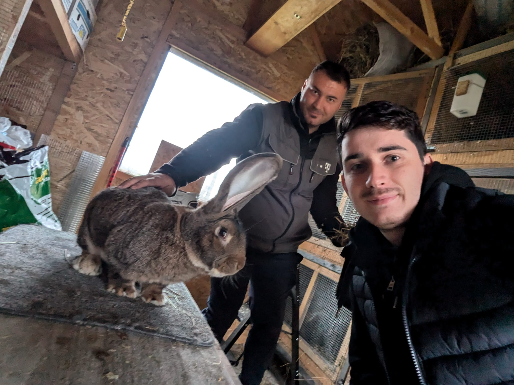

Having all these set, we started looking for people who would be interested in our idea. We used social media platforms such as
Facebook, Whatsapp and Messenger to connect with potential customers from Farming Groups or connections of us or our friends who
own animals. We managed to have a couple of discussions with horse, sheep, cow and rabbit owners, both virtually and face-to-face,
adding a few of the evidence we gathered to our Google Drive.
We even managed to visit a rabbit farm! With this visit, we found out that the owner will be very interesed in being our Unfair Advantage,
as he is holding an Youtube channel with more than 5.8k subscribers and he is willing to promote our app on his channel, as well as give us
contacts about other rabbit breeders he knows.
We tried to adopt an approach which is indicated in the Mom Test book, and so we decided on 3 main questions to be asked during the interviews
and some additional questions depending on the answers we received. We also tried to keep the conversation as natural as possible, to make the
interviewee feel comfortable and to get the most honest answers.
The main questions were:

How do you currently track your information such as breeding, vaccination schedule and many others for animals?
Which management activities take up most of your time?
Have you ever encountered issues in keeping track of when and which vaccines the animals have received?
The potential customers who agreed to give us interviews provided valuable insights into their needs and preferences.
We discovered that, while some breeders were highly organized and maintained detailed records, many were seeking a
simpler and more automated approach to managing basic tasks like breeding, vaccinations, and feed. Several interviewees
indicated that they currently use ad-hoc methods to track breeding cycles and vaccinations, relying on handwritten notes
or basic files on their computer. They highlighted the potential value of features such as automated reminders for vaccinations
and breeding events, which would reduce their dependency on memory and prevent missed care windows.
Moreover, a recurring theme was the challenge of keeping track of family lineage to avoid inbreeding, particularly for those who
don't have a structured record-keeping system. An in-app family lineage tracker with alerts for related pairings was widely seen as
beneficial, making it easier to sustain healthy breeding practices without additional manual work. We also noted a strong interest in
the ability to centralize information on each animal’s lineage, breed, and other relevant data in a digital profile.
Beyond animal care, the interviewees expressed interest in an integrated animal-specific marketplace (in our case, the accent was on rabbits
as we had more insights on them). Unlike general platforms where listings can be lost among unrelated products, a dedicated marketplace with
verified animal profiles would simplify buying and selling, improving transparency and connecting breeders more directly.
Also, there were some interviews that were not as insightful as we hoped. However, we learnt from them that our project could also help the
small-scale breeders. The ones who participated at our interviews, were not reluctant to using a simple app, even if they are not as invested
as the others into the rabbit livestock. Therefore, the idea of releasing the app with different subscription plans appeared.